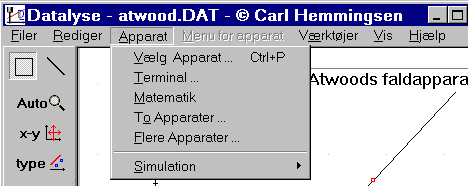
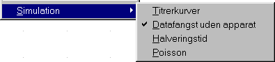
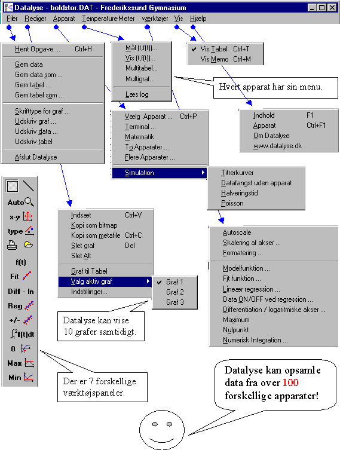

Sådan ser hovedmenuen i Datalyse ud. I den fremhævede menu, kan der vælges:

Når »Datafangst uden apparat« er afkrydset, kan alle apparater vælges og alle menuer kan studeres. Datafangst vil i de fleste tilfælde give en simuleret ret linie (eller flere rette linier). Halveringstid og poissonfordeling giver »rigtige« simulationer.
Når et apparat er valgt, erstattes Menu for apparat med apparatets menu.
Således ser menuerne ud, når der er valgt et apparat og der er hentet en opgave:

Ved dataopsamling kan man fx. vælge:
Valgmulighederne afhænger naturligvis af det valgte apparat.
Grafen vises altid. Tabellen vises, hvis man vælges Vis | Vis Tabel i hovedmenuen. Memoen vises, hvis man vælger Vis | Memo i hovedmenuen.